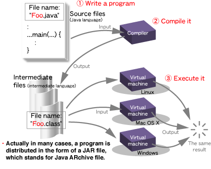

Disciplinas
-
PROGRAMAÇÃO ORIENTADA A OBJETOS-T01-2024-1 Concluído
Materiais
Vídeo 2 - Programação Orientada a Objetos - Java e Frameworks de Desenvolvimento. sendProfessor ministrante: Júlio Cezar Estrella.
Conteúdo
Java e Frameworks de Desenvolvimento.
Roteiro:
- POO e a Linguagem Java.
- Meu primeiro programa em Java.
- Download da Plataforma Java.
- Ambiente de Desenvolvimento Java e Testes.
POO e a Linguagem Java.
- Nesta disciplina, os conceitos de POO serão explorados utilizando a linguagem Java.
- Um das razões é que a linguagem Java continua ainda muito popular, embora a utilização de linguagens como Python tem crescido nos últimos anos como mostra o ranking >> TIOBE
- A facilidade de entendimento e a ampla utilização da linguagem em celulares, televisores, etc., ainda faz de Java uma linguagem de programação muito atual.
Informações relevantes sobre Java:
- É uma Linguagem orientada a objetos.
- Desenvolvida pela Sun Microsystems (hoje a Oracle).
- Modelada no C++.
- Projetada para ser pequena e simples, portável (para diferentes sistemas operacionais e arquiteturas).
Um programa Java executa em:
- Servidores.
- Desktops.
- Celulares.
- Usa bytecodes.
Processo de compilação de um programa em Java.
+----------------------------+
| Editor de Texto |
| (ex: VS Code, IntelliJ) |
+----------------------------+
↓
+----------------------------+
| Código Fonte (.java) |
+----------------------------+
↓
+----------------------------+
| Compilador Java (javac) |
+----------------------------+
↓
+----------------------------+
| Bytecode (.class) |
+----------------------------+
↓
+----------------------------+
| Biblioteca Java (library) |
| |
+----------------------------+
↓
+----------------------------+
| Máquina Virtual Java (JVM) |
+----------------------------+
↓
+----------------------------+
| Execução do Programa |
+----------------------------+
Meu primeiro programa em Java.
Etapa 1: Criação de um programa Java.
- Inserção de códigos pelo programador usando um editor
Etapa 2: Compilação do programa Java em bytecodes.
- O compilador vai transforma o código.java em código.class (bytecodes), que representam as tarefas a serem executadas na fase de execução.
- A vantagem dos bytecodes é que eles são portáveis e independem de plataforma.
Etapa 3: Carrega o programa Java em memória.
- A Java Virtual Machine (JVM) armazena o programa em memória para executá-lo, efetuando 0 seu carregamento. O carregador de classe, pega o .class que têm os bytecodes do programa e os transfere para a memória principal
Etapa 4: Verificar os bytecodes.
- Enquanto as classes são carregadas, o verificador examina seus bytecodes para ter certeza que são válidas.
Etapa 5: Executar o programa Java.
- A JVM executa OS bytecodes utilizando uma combinação de interpretação (Just in Time), conhecido como compilador Java HotSpot.
- O Java HotSpot traduz os bytecodes para a linguagem de máquina, quando a JVM encontra novamente essas parte compiladas.
Podemos executar em qualquer lugar (em SOs distintos)
Na verdade, em muitos casos, um programa é distribuído na forma de um arquivo JAR, que significa Java Archive file.
Exemplo de um programa em Java:
//Meu primeiro programa em Java
public class teste
{
public static void main (String[] args)
{
System.out.println ("É apenas um teste!");
}
}
- Comentários são ignorados pelo compilador.
- Para o compilador, o código vai aparecer como abaixo, sem nenhum comentário..
public class Teste
{
public static void main (String[] args)
{
System.out.println ("É apenas um teste!");
}
}
- Esse código é a definição de uma classe.
- Um pacote de instruções que especificam: que tipo de dados, que tipos de operações podem ser feitas.
- Instruções dentro da definição de uma classe são agrupadas em um ou mais procedimentos chamados métodos.
- Todo programa Java tem que ter um método main em que a execução dele começa.
Identificadores:
- Palavras usadas para se escrever programas são chamadas identificadores
- Exceto aquelas dentro de aspas (essas são strings).
public class Teste
{
public static void main (String[] args)
{
System.out.println ("É apenas um teste!");
}
}
- Identificadores especiais em Java são chamados palavras reservadas, podendo ser utilizadas em locais pré-determinados.
- Neste caso, criamos o identificador "Teste".
Exemplo de palavras reservadas:
| abstract | continue | for | new | switch |
| assert*** | default | goto* | package | synchronized |
| boolean | do | if | private | this |
| break | double | implements | protected | throw |
| byte | else | import | public | throws |
| case | enum | instanceof | return | transient |
| catch | extends | int | short | try |
| char | final | interface | static | void |
| class | finally | long | strictfp** | volatile |
| const | float | native | super | while |
Identificadores:
- Java é case sensitive.
- Teste, teste, TESTE são diferentes identificadores.
- Fonte comum de erros em programas Java.
- Quando criar um novo identificador, pense em nomes construtivos. Embora não haja limite.
Download da Plataforma Java.
O universo Java é formado por 3 plataformas principais:
- Java SE (Java Plataform Standard Edition): Trata-se da base da plataforma e inclui o ambiente de execução e as bibliotecas mais comuns
- Java EE (Java Plataform Enterprise Edition): Voltada para o desenvolvimento de aplicações corporativas e para Internet.
- Java ME (Java Plataform Micro Edition): Utilizada para o desenvolvimento de aplicações para dispositivos móveis e embarcados
Um programa Java precisa de dois componentes para ser executado: a JVM (Javar Virtual Machine) e um conjunto de bibliotecas de classes
Para este disciplina, vamos usar o Java SE
Para realizar o download acesse o link abaixo e escolha a JVM indicada para o seu sistema operacional.
Download aqui!Ambiente de Desenvolvimento Java e Testes.
Nesta disciplina todos os códigos que vamos abordar e que serão disponibilizados, serão executados utilizando o ambiente de desenvolvimento conhecido como Netbeans IDE.
- Funciona em vários sistemas operacionais (Linux, Windows e MacOS)